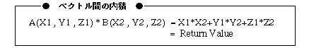

Return to previous page | Return to menu | Go to next page
FIXED
Arithmetic functions
Vector dot product
FIXED slInnerProduct(vct1 , vct2)
VECTOR vct1 ;
VECTOR vct2 ;
vct1 VECTOR type variable that takes dot product vct2 VECTOR type variable that takes dot product
Takes the dot product of the specified vectors and returns the result.
The function returns the inner product operation result.
The return value is calculated as shown below.

Reference: Chapter 11 Arithmetic Functions
slInnerProduct